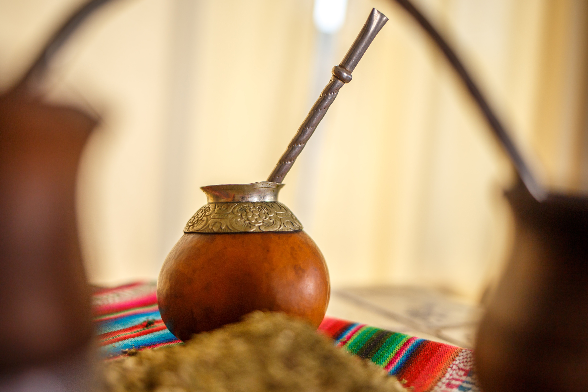

La yerba mate es una tradición argentina que se ha instalado en todos los rincones del país. Más que una infusión, es un elemento cultural que conecta a todos los argentinos, convirtiéndose en un nexo para sociabilizar en reuniones con amigos, familiares e incluso, de trabajo. Y ahora, el consumo de esta infusión "tan criolla" se está trasladando a otras culturas del mundo.
Continuar leyendo